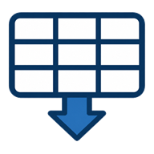

Projects and files
Search tools
Line list compare

P&ID table extraction
Pipe tracing
Found tags
Valve–line connections
Create local project
Project name
Cancel
Create project
☰
Add P&ID to start
Click anywhere here to choose a PDF and begin tag review, comparison, and export.
Line List Compare
No comparison loaded
_
x
Show attributes
Show on PDF
Attribute:
None
Export CSV
Run a compare to view results.